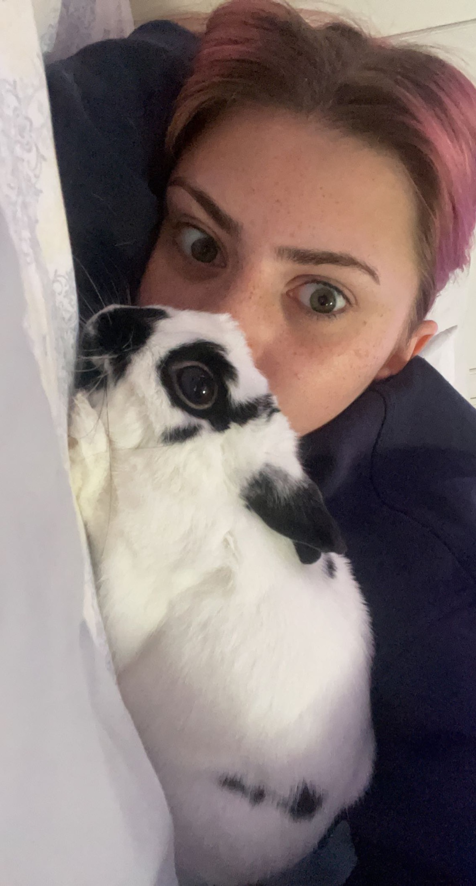

Personal Life

I am the youngest in my family of four. My sister Madison is twenty one years old and lives in Boone, NC. At home, I have a pet bunny rabbit names Frodo. Frodo is three years old and my best friend. We watch movies together and he is always there to listen. I also have two dogs named Rusty and Miley, and a cat named Bella.
Interests
In my free time, I enjoy watching tv shows and movies. I try to watch as many movies as possible but every once and a while switch it up with a show like Pretty Little Liars. My favorite movies are The Matrix, Spirited Away, Walk Hard the Dewey Cox Story, Heathers, and the Young Girls of Rochefort.
"